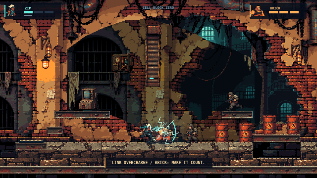
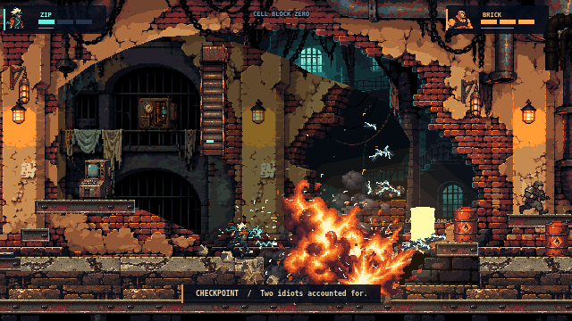
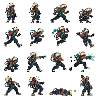
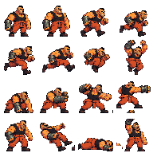
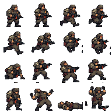

Cell Block Zero / art-direction reboot
One playable environment. Existing movement, combat, cooperation and authoritative multiplayer. These are actual Chromium gameplay captures, not generated scene mockups. Source illustrations and imported pixel assets are disclosed separately.
Review candidate, not a claim of Broforce parity. The revised art is confined to this prison environment. THE MACHINE retains its existing art. No new levels, mechanics or menus were added.
Same keyboard route and viewport; effects, camera shake and capture timing vary. Each capture's tick and world state are recorded in its evidence JSON. Display width scales the whole frame equally.
Before · 69eba18After · revised artwork
Before, at equal display width.After, at equal display width. Open either image for its full 1280 × 720 capture.
Actual action capture
Download the 15-second MP4 · Uncut source WebM · Capture evidence · Verified file hashes

Cooperative electrical charge.
Live destruction, guard reactions and chain explosions.Editable character keys
Original AI-assisted illustrations imported to 48px cells, a shared 65-color palette and binary alpha. Sixteen keys per character, shown at 2×. The runtime strips hold these across 32 frames. They are not claimed to be hand-pixelled animation.

ZIP — mint, ivory, copper.
BRICK — orange, skin, piston steel.
Guards — olive and a small red visor.Reference comparison
These external images are actual Broforce gameplay references, not our assets. The first is from a localization project's preview; the other two explicitly depict a community mod. All are displayed at the same 640px screen width. Original native pixel scales are not established by these screenshots.
What still falls short
Floor and beam repetition remain visible. ZIP's face is less legible than his hair and scarf. Some generated poses change equipment shape and retain three-quarter perspective. The source background's lighting is largely baked; foreground motion and interactive light response are limited. Tile cuts remain grid-shaped despite chipped contours. Static references cannot establish animation timing or commercial effect parity.
The new illustrations are a concrete alternative foundation, but a specialist pixel artist should clean up native-size clusters, limb consistency and in-betweens before calling the art production-ready. No additional content should proceed until this direction receives visual approval.
Full review and validation · Palette and editable sprite workflow